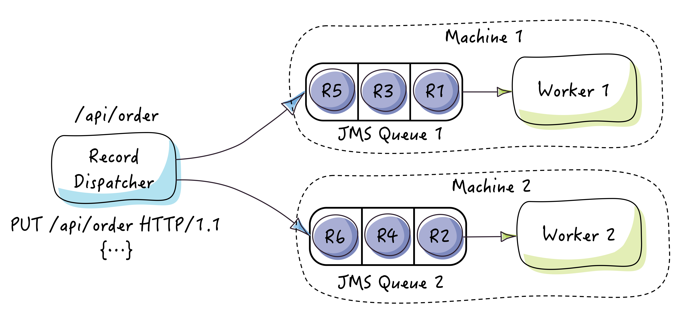

Distributed jobs
1. Introduction
In this tutorial, you will learn how to implement a custom record dispatcher in order to balance a heavy workload to a distributed army of worker engines deployed on a cluster of machines.
Let's suppose you have an E-commerce web application and you would like to process orders separately on different machines to support a high number of concurrent order placing requests.
You have already setup a RESTful API listening to incoming http PUT requests to place orders:

We will turn this REST endpoint into a record dispatcher that will distribute incoming requests (or records) to several worker engines. Each worker engine has its own JMS queue in which order records will be placed waiting to be processed asynchronously. So let's get started.
2. What you’ll need
- JDK 1.6+
- Maven
- Git (Optional)
- Your favorite IDE (Optional)
3. Implementing the RestEndpointRecordDispatcher
To keep the tutorial simple, we will use the JDK built-in HTTP server instead of a RESTful framework.
Here is the implementation of the custom record dispatcher:
RestEndpointRecordDispatcher.java
public class RestEndpointRecordDispatcher extends AbstractRecordDispatcher implements HttpHandler {
private long recordNumber;
@Override
public void dispatchRecord(Record record) throws Exception {
JMSUtil.sendStringRecord((StringRecord)record);
}
@Override
public void handle(HttpExchange httpExchange) throws IOException {
//should check if request == PUT && path = /api/orders ..
InputStream requestBody = httpExchange.getRequestBody();
String payload = IOUtils.toString(requestBody);
try {
Header header = new Header(++recordNumber, "REST API: /api/orders", new Date());
dispatchRecord(new StringRecord(header, payload));
} catch (Exception e) {
throw new RuntimeException(e);
}
}
}This dispatcher will be used as a HTTP handler of the embedded server.
A single JMS queue is used for simplicity's sake, you should use multiple queues in a production use case and dispatch records either in a round robin fashion, based on record content (for example, separate orders placed from a mobile device and orders placed from a web browser) or any other strategy.
The JMSUtil class is the same class used in the Asynchronous jobs tutorial and is used to start an embedded JMS broker
and send JMS messages to the queue.
4. Putting it all together
To launch the tutorial, we will use the following class:
public class RestEndpointRecordDispatcherLauncher {
public static void main(String[] args) throws Exception {
JMSUtil.initJMSFactory();
HttpServer server = HttpServer.create(new InetSocketAddress(8000), 0);
server.createContext("/api/orders", new RestEndpointRecordDispatcher());
server.setExecutor(null); // create a default executor
server.start();
System.out.println("Record dispatcher started.\n" +
"Listening for incoming records on http://localhost:8000/api/orders\n" +
"Hit enter to stop the application...");
System.in.read();
server.stop(0);
JMSUtil.sendPoisonRecord();
System.exit(0);
}
}This class starts an embedded HTTP server and registers the RestEndpointRecordDispatcher
to listen to incoming requests on http://localhost:8000/api/orders.
5. Running the tutorial
5.1 From the command line
To run the tutorial from scratch, proceed as follow:
$>git clone https://github.com/EasyBatch/easybatch-framework.git
$>cd easy-batch
$>mvn install
$>cd easybatch-tutorials
$>mvn exec:java -PrunJmsTutorial
This will launch an embedded broker with a JMS queue to which records will be dispatched and processed by a worker engine.
Now, you should launch the REST endpoint serving as record dispatcher. Open a separate terminal and run the following command:
$>mvn exec:java -PrunDistributedTutorial
The REST endpoint should be listening to incoming requests on http://localhost:8000/api/orders:
Record dispatcher started.
Listening for incoming records on http://localhost:8000/api/orders
Hit enter to stop the application...You can send arbitrary requests to http://localhost:8000/api/orders using
curl -XPUT http://localhost:8000/api/orders -d '{orderData}' for example
and see that the worker engine has processed the record.
5.2 From your IDE
First, you need to checkout the source code of the tutorial available here:
$>git clone https://github.com/EasyBatch/easybatch-framework.gitIf you do not have git installed, you can download a zip file containing the project's source code from GitHub here.
Then, import the easybatch-tutorials module in you favorite IDE and resolve maven dependencies.
Finally, run the org.easybatch.tutorials.advanced.distributed.RestEndpointRecordDispatcherLauncher class without any argument.
6. Summary
In this tutorial, you have seen one possible way of load balancing the work across multiple worker engines. Even though the tutorial uses a single worker engine on the local machine, you can configure the record dispatcher with several JMS queues deployed on a cluster of distributed machines.
7. What's next?
That was all for advanced tutorials, you are now ready to develop any kind of batch application using Easy Batch. Congratulations!